这本手册给谁看：门店里实际录商品、开单、查库存、打印报表的同事。不需要懂电脑原理，按步骤照做即可。
先确认你们是哪种用法：
安装与卸载
安装包是按当前用户安装的，不需要管理员权限；装完桌面和开始菜单会有入口。
1.1 运行安装包
- 双击安装包。文件名类似
小兔进销存-0.9.0-win64-setup.exe。 - 如果出现蓝色提示“Windows 已保护你的电脑”。点“更多信息”，再点“仍要运行”。这是 Windows 对未签名安装包的常规提醒。
- 按向导点下一步。安装向导目前是英文按钮，对照如下：Next＝下一步，Back＝上一步，Cancel＝取消，Browse＝浏览，Install＝安装，Finish＝完成。
- 选择数据目录。直接点 Next 使用默认目录即可；要换到其他盘，点 Browse 选择，例如
D:\小兔进销存数据。 - 选择附加任务。建议保留“创建桌面快捷方式”，然后点 Next。
- 点 Install 开始安装，最后点 Finish 完成。完成页可以直接勾选启动软件；也可以稍后双击桌面图标。
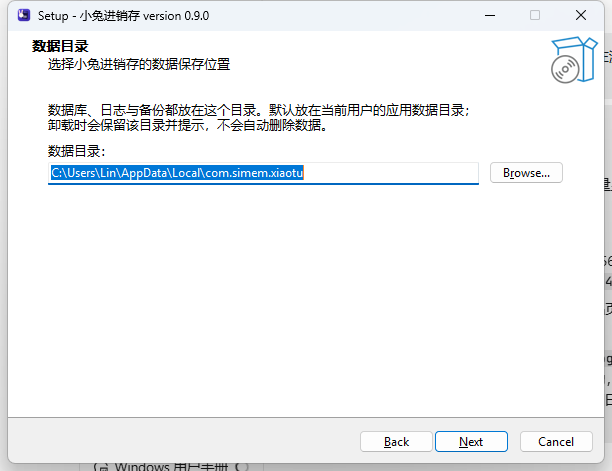
C:\Users\你的用户名\AppData\Local\com.simem.xiaotu，数据库、日志和备份都放在这里；卸载时会保留，不会自动删除。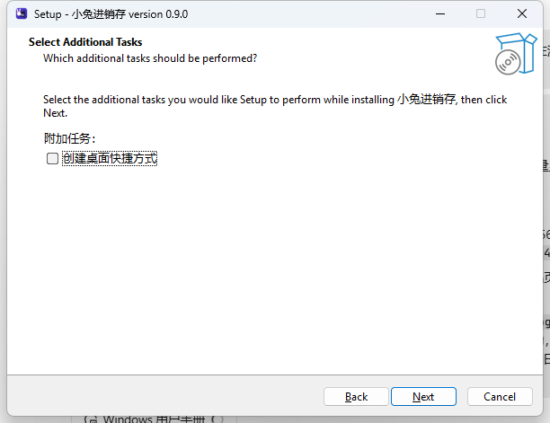
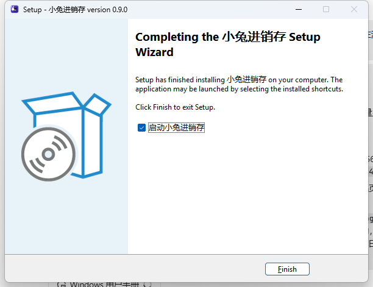
1.2 安装位置与快捷方式
- 程序默认装在
C:\Users\你的用户名\AppData\Local\Programs\小兔进销存，只影响当前 Windows 用户，不需要管理员权限。 - 开始菜单会出现「小兔进销存」；安装时勾选附加任务后，桌面也会有一个同名图标。双击即可打开。
- 如果换了数据目录，请记住这个位置：以后备份、换电脑、找数据都靠它。默认目录就是图 1-1 中显示的路径。
- 不要把程序目录里的单个文件单独拖走；要移动就整个文件夹一起移动，并重新创建快捷方式。
1.3 卸载
- 打开 Windows 的“设置”→“应用”→“安装的应用”（Windows 10 为“应用和功能”）。
- 找到“小兔进销存”，点右侧的“卸载”。
- 确认卸载时选“是（Y）”。
- 卸载完成后会提示“数据目录已保留”。如果以后还要用，请保留这个目录；确认不再需要时再手动删除。
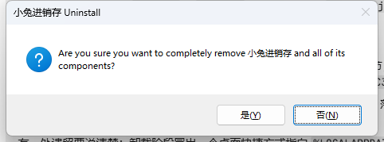
1.4 静默安装（备注，普通用户可跳过）
这一段给负责批量装机的电脑管理员看。普通门店用户按上面的向导安装即可。
小兔进销存-0.9.0-win64-setup.exe /VERYSILENT /SUPPRESSMSGBOXES /NORESTART /DIR="D:\Apps\小兔进销存"/DIR指定程序安装目录，不写则使用默认目录。- 静默安装不会弹出“数据目录”选择页，数据会放在默认目录
%LOCALAPPDATA%\com.simem.xiaotu。确实要自定义数据目录时，不要用静默安装，改用图形向导。 - 需要留安装记录可加
/LOG="D:\install-xiaotu.log"。
首次启动与登录
单机版和网络版的进入方式不同；先确认自己属于哪一种。
2.1 单机版：一台电脑使用
全新安装、还没有数据时：双击桌面图标，稍等几秒，会直接进入软件，不会先问口令。第一次默认停在“商品”页，列表显示“暂无数据”，这是正常的。
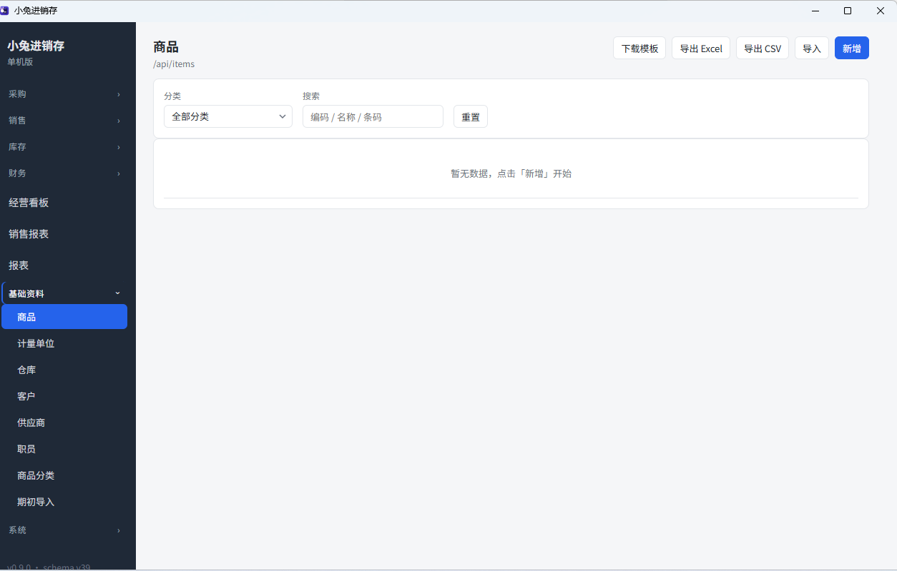
电脑里已经有数据、但还没有设过本机口令时：软件会先出现“设置本机口令”页，让你选择设一个口令，或者跳过。
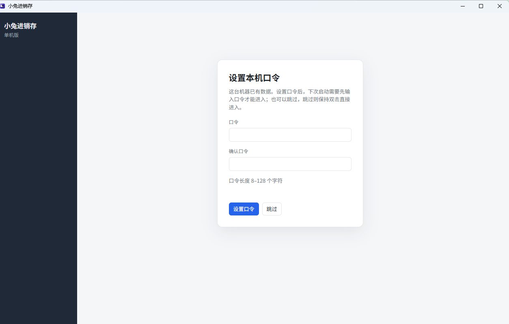
· 不设本机口令＝每次双击直接进入；
· 设了本机口令＝每次启动都要输入，没有“30 天内免输”选项，系统参数里也不会出现“本机免输”卡片。
同一台电脑多人使用时，建议设置口令；只有自己用的电脑，可以跳过不设。
已经设过口令时：每次启动会出现下面这个页面，输入本机口令后点“进入”。
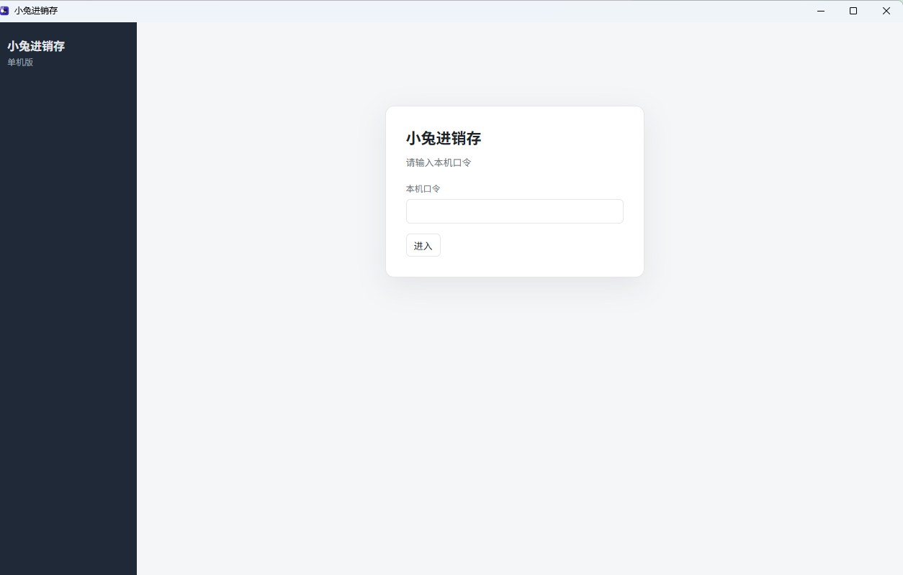
忘记口令时不要反复试。请按 2.3 节由电脑管理员重置；重置不会删除业务数据。
2.2 网络版：几台电脑一起用
网络版需要一台电脑当“服务器”，数据只放在这台电脑上；其他电脑不装软件，用浏览器访问。服务器电脑建议放在收银台或办公室，不要随手关机。
第一步：给管理员设置口令（只做一次）。打开开始菜单，搜索 PowerShell，直接打开（不需要管理员权限），然后依次执行：
cd "$env:LOCALAPPDATA\Programs\小兔进销存"
$env:XIAOTU_PASSWORD = "你自己定的口令"
.\xiaotu-server.exe --set-password admin口令至少 8 位。如果安装时改过数据目录，设置口令和启动服务的两条 xiaotu-server.exe 命令末尾都要加上 --data "你的数据目录"，而且必须使用同一个目录。
第二步：启动网络服务。继续执行：
.\xiaotu-server.exe --server --port 8080看到“监听 0.0.0.0:8080”就表示服务已启动。这个窗口不要关；关掉窗口，所有客户端都会断开。第一次启动时 Windows 可能弹出防火墙提示，请勾选“专用网络”和“公用网络”，并点“允许访问”。
第三步：客户端连接。在另一台同一局域网（同一个路由器/交换机）的电脑上，打开 Edge 或 Chrome，地址栏输入：
http://服务器电脑的IP:8080/例如服务器 IP 是 192.168.1.20，就输入 http://192.168.1.20:8080/。服务器 IP 可在服务器电脑上打开“设置→网络和 Internet”查看，或在 PowerShell 里执行 ipconfig，看“IPv4 地址”。
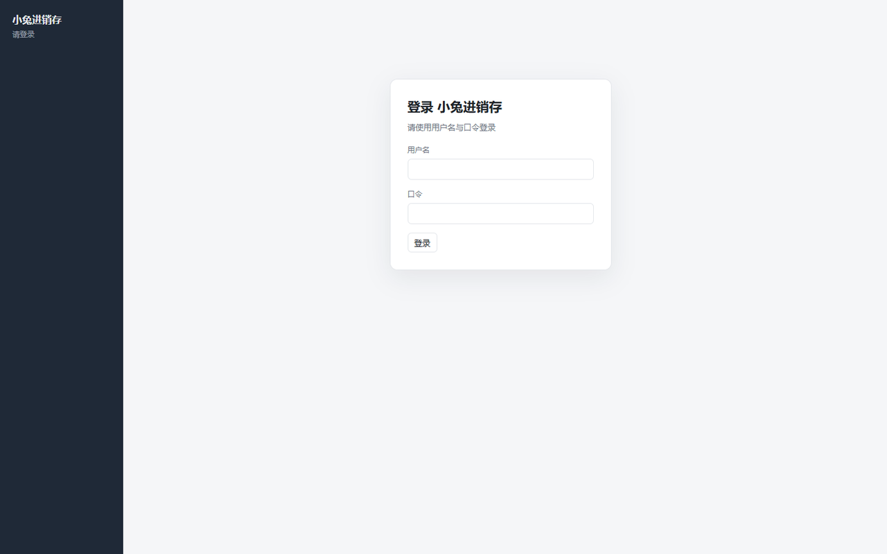
admin，口令填第一步设置的口令。管理员在“系统→用户”里重置某个账号的口令后，这个账号下次登录会先要求改一次口令。新口令同样是 8–128 位，改完才能进入主界面。
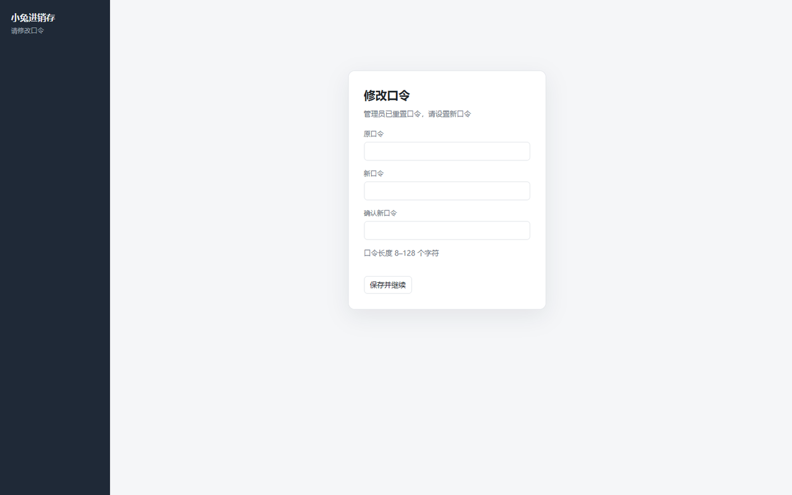
2.3 忘记口令怎么办
不要删除数据目录，也不要重新安装。请电脑管理员在服务器（或单机电脑）上重置管理员口令：
- 先退出软件；网络版请先在服务器窗口按 Ctrl+C 停止服务。
- 打开 PowerShell，进入安装目录：
cd "$env:LOCALAPPDATA\Programs\小兔进销存"。 - 执行下面两行，把引号里的内容换成新口令：
$env:XIAOTU_PASSWORD = "新的口令"
.\xiaotu-server.exe --set-password admin如果安装时改过数据目录，最后一行末尾加 --data "你的数据目录"。
看到“口令已更新”即可。重新打开软件或重启网络服务，用新口令登录。重置只改口令，不动商品、单据和库存。
界面总览
左侧是功能菜单，中间是当前页面，右上角是本页能做的事。
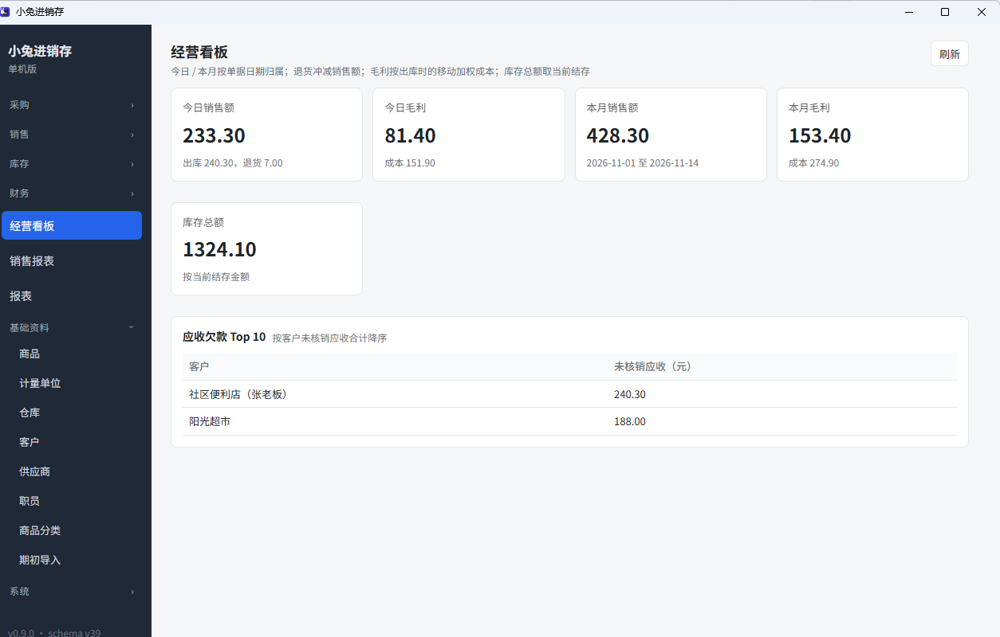
左侧菜单分组
| 分组 | 里面有什么 | 什么时候用 |
|---|---|---|
| 采购 | 采购入库、采购退货、采购订单 | 进货、退货、先订后到 |
| 销售 | 销售出库、销售退货、销售订单 | 卖货、退货、先订后送 |
| 库存 | 库存、其他入库、其他出库、调拨、盘点 | 查库存、调货、盘库 |
| 财务 | 收付款、对账单、成本调整 | 登记收款付款、对账 |
| 基础资料 | 商品、计量单位、仓库、客户、供应商、职员、商品分类、期初导入 | 开单前先把资料建好 |
| 系统 | 用户、审计日志、系统参数、打印模板、备份与恢复、关于与诊断 | 账号、备份、打印设置 |
“经营看板”“销售报表”“报表”单独放在分组上方，随时可以点开查看。
常见操作在哪里
- 右上角按钮：随页面变化，常见的有“新增”“导入”“导出 Excel”“导出 CSV”“下载模板”“刷新”“打印”。
- 筛选区：列表上方的分类下拉框、搜索框和“重置”。输入编码、名称或条码后按回车即可筛选。
- 每一行右侧：“编辑”“审核”“反审核”“打印”“删除”等操作，只对当前这一行生效。
- 列表底部：数据多时会出现“上一页 / 下一页”和页码；部分列表还可以调整每页条数。
- 关闭窗口：如果有还没保存的内容，软件会先提醒，避免误关。
基础资料
商品、客户、供应商是开单的基础。先把资料建好，开单时只需搜索选择。
4.1 商品
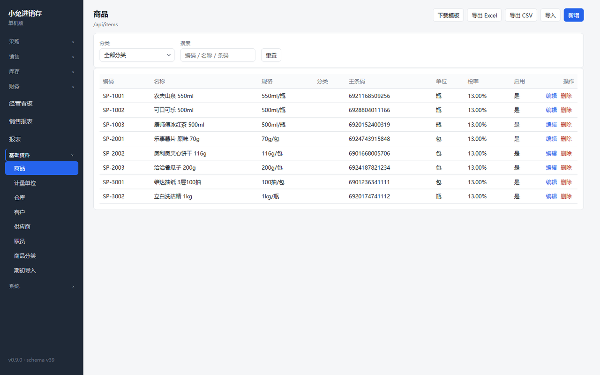
- 点左侧“基础资料→商品”，再点右上角“新增”。
- 填写商品编码、名称、规格、单位、分类、税率和条码。编码和名称必填，编码不能重复。
- 有条码枪的，把光标放在条码框里扫一下即可；一个商品可以保存多个条码。
- 点“保存”。保存后回到列表，可以继续新增下一个。
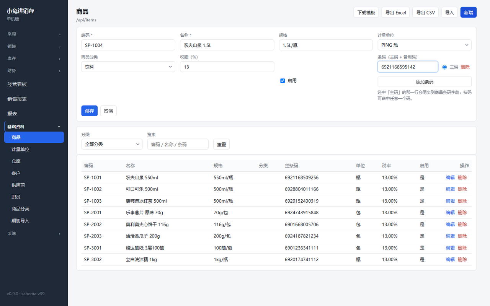
- 修改：在列表行点“编辑”。已经开过单的商品，建议修改名称/规格前先确认不影响历史单据。
- 停用：不再卖的商品优先“停用”，不要删除。停用后新单据选不到，历史单据仍能查。
- 批量导入：点“下载模板”，按模板填好后再点“导入”。导入前软件会自动备份数据库；导入失败会中止，不会写一半。
4.2 客户
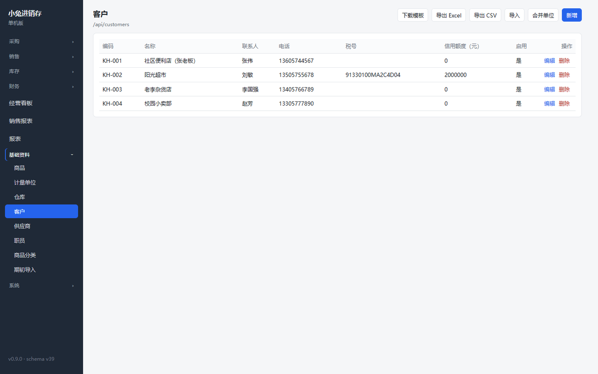
- 点“基础资料→客户”，再点“新增”。
- 填写客户编码、名称、联系人、电话、税号和地址；需要控额度的填“信用额度”。
- 点“保存”。开销售出库单时，输入客户名称或编码即可选中。
4.3 供应商
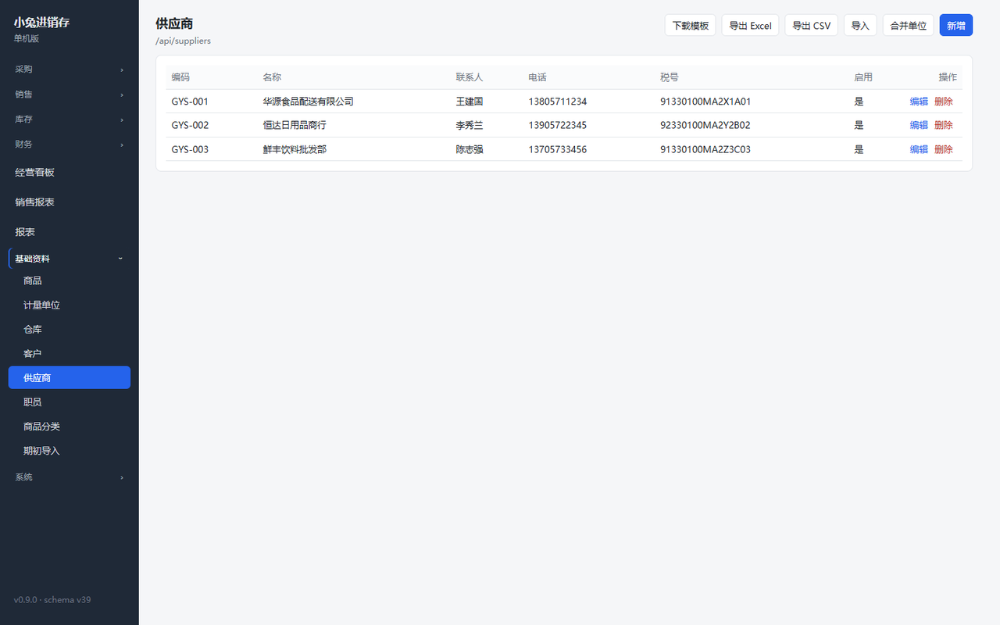
新增方式和客户一样：基础资料→供应商→新增，填编码、名称、联系人、电话、税号、地址，保存。
4.4 其他基础资料
| 项目 | 用途 | 建议 |
|---|---|---|
| 计量单位 | 瓶、包、件、箱、千克等 | 开单前先建好常用单位 |
| 仓库 | 主仓库、门店仓库等 | 至少保留一个默认仓库 |
| 职员 | 业务员、店长等 | 销售单可记录业务员，方便提成统计 |
| 商品分类 | 饮料、零食、日用品等 | 分类便于筛选和报表 |
| 期初导入 | 把开店前的库存和往来余额录进来 | 只在启用软件时做一次，做之前先备份 |
业务操作
采购进货、销售出货、审核、查库存。记住一句话：草稿不碰库存，审核才生效。
5.1 采购入库
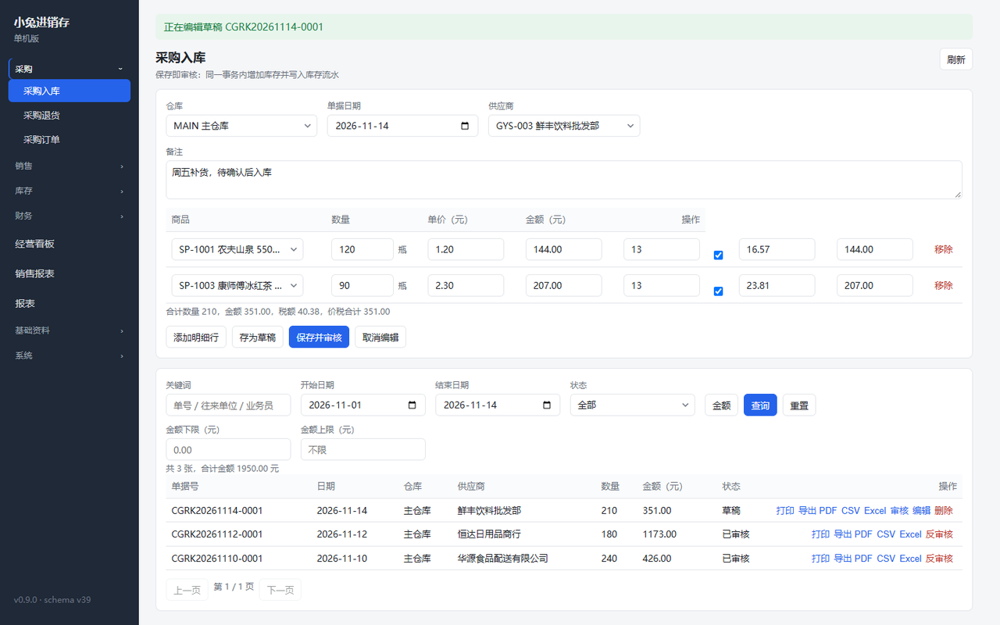
- 点左侧“采购→采购入库”。
- 选择供应商、入库仓库和日期。供应商可以留空，但建议选择，方便以后对账。
- 在明细里选择商品，填数量和进价；一行一个商品，可以连续添加多行。
- 核对右下角的合计数量、金额和税额。
- 点“保存并审核”直接入库；如果货还没到齐，点“保存草稿”，等确认后再审核。
- 在下方列表找到这张单，状态会显示“草稿”或“已审核”。草稿行可以“编辑”“审核”“删除”。
5.2 销售出库
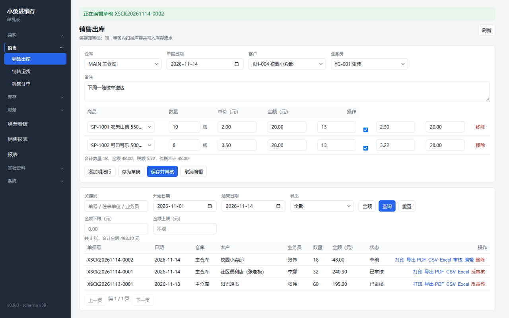
- 点左侧“销售→销售出库”。
- 选择客户、出库仓库、日期和业务员（业务员可不填）。
- 选择商品，填数量和售价。售价可以改，改完合计会自动更新。
- 点“保存并审核”。库存不足时软件会拦截；客户超信用额度时会按系统设置提示或拦截。
- 需要给客户单据时，在下方列表点这一行的“打印”。
5.3 审核、反审核与草稿
| 状态 | 能做什么 | 对库存/往来影响 |
|---|---|---|
| 草稿 | 编辑、删除、审核 | 不影响库存，不产生应收应付 |
| 已审核 | 反审核、打印 | 已增加/扣减库存，已记应收应付 |
- 草稿只是临时保存，不影响库存和往来；建议当天确认后及时审核，避免时间久了忘记。
- 反审核会把库存和往来一起冲回。如果后面已经用了这批货，软件可能不允许反审核；先处理后面的单据，再回来反审核。
- “保存并审核”适合现场一手交钱一手交货；“保存草稿”适合货没到齐、价格没定或需要老板确认的情况。
5.4 查看库存
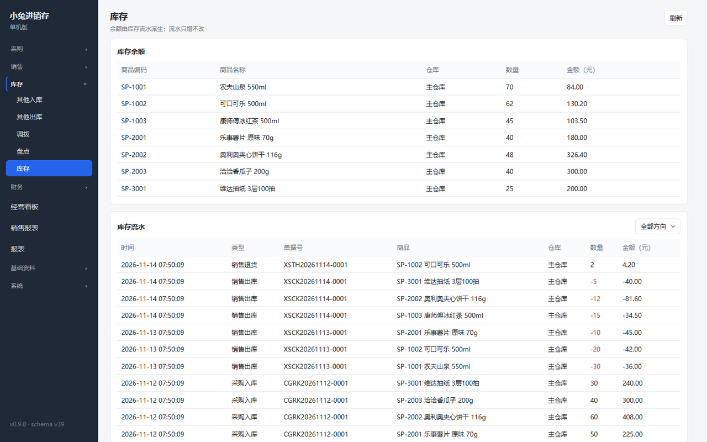
- 点左侧“库存→库存”。
- 在“库存余额”里按商品、仓库筛选，查看数量和结存金额。
- 点“库存流水”可以追查某个商品为什么多/少，按日期和单据号核对。
- 需要给老板看时，点“导出 Excel”或“导出 CSV”。
5.5 其他常用单据
| 单据 | 什么时候用 |
|---|---|
| 采购退货 | 把货退给供应商，冲减库存和应付 |
| 销售退货 | 客户把货退回来，增加库存、冲减应收 |
| 采购订单 / 销售订单 | 先订货、后到货/送货；订单本身不占库存，转成入库/出库单后才生效 |
| 调拨 | 把货从一个仓库转到另一个仓库，数量不变 |
| 盘点 | 按实盘数调整账面，差异自动生成调整流水 |
| 其他入库 / 其他出库 | 赠品、报损、内部领用等不涉及往来单位的出入库 |
| 收付款 | 登记客户回款、供应商付款，核销应收应付 |
| 对账单 | 按客户/供应商打印一段时间内的往来明细 |
报表与打印
先选日期，再查询；看完可以导出，也可以直接打印。
6.1 常用报表
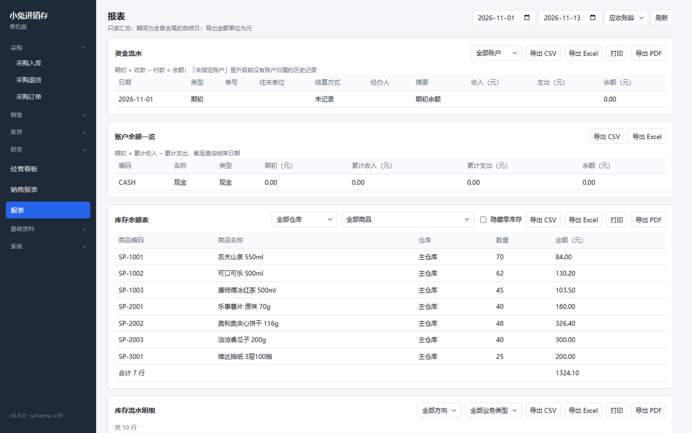
“报表”页包含：
- 库存余额表：每个商品、每个仓库的数量和结存金额，月末盘点、核对库存最常用。
- 资金流水：收付款和账户变动明细。
- 销售毛利：按单据日期统计销售额、成本、毛利和毛利率。
- 采购汇总：按供应商/商品/仓库汇总采购数量和金额。
- 应收应付余额与账龄：看谁欠我们、我们欠谁，以及欠了多久。
“销售报表”页还可以按客户、按业务员或按单据明细查看销售情况，适合算提成和做周报。
6.2 打印流程
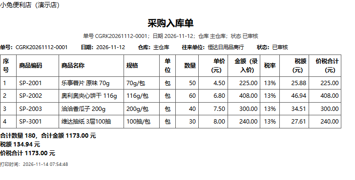
- 在单据列表点这一行的“打印”，或在报表区块点“打印”。
- 先看预览：单号、日期、往来单位、商品、数量、金额是否完整。
- 如果提示“打印内容超出纸张，可能被裁切”，点“继续”直接打印，或点“返回调整”检查纸张和边距。
- 在打印对话框里选择打印机，纸张选 A4，方向按预览选择纵向；建议关闭“页眉和页脚”，避免多出网址和日期。
- 没有打印机时，打印机选“Microsoft Print to PDF”，可以先生成 PDF 发给客户。
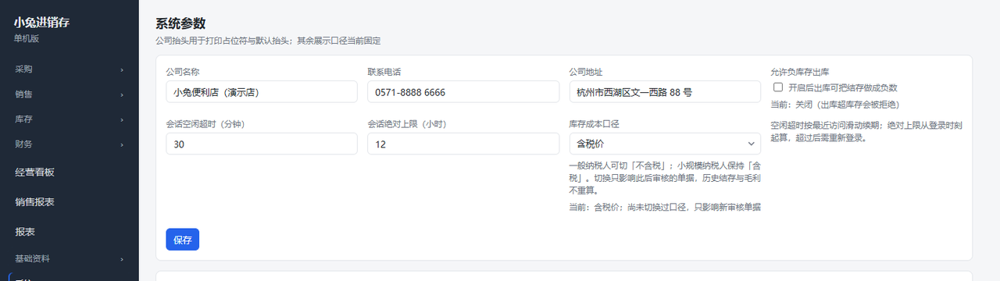
备份、恢复与数据目录
数据是门店的命根子；每天自动备份，换电脑前再手工复制一份。
7.1 数据放在哪里
默认数据目录：C:\Users\你的用户名\AppData\Local\com.simem.xiaotu（安装时如果改过，以你选的目录为准）。里面主要有：
| 文件/文件夹 | 作用 |
|---|---|
app.db | 数据库文件，商品、单据、库存、往来都在里面 |
backups\ | 自动备份和手动备份 |
logs\ | 运行日志，排查问题时给维护人员看 |
config.toml | 只有改过数据目录或端口时才有 |
7.2 自动备份
软件每天第一次启动时会自动做一次备份，放在数据目录的 backups\ 里；默认保留最近 30 份日备份，并每月额外保留 1 份。备份文件是完整的数据库副本，可以直接用来恢复。
7.3 从备份恢复
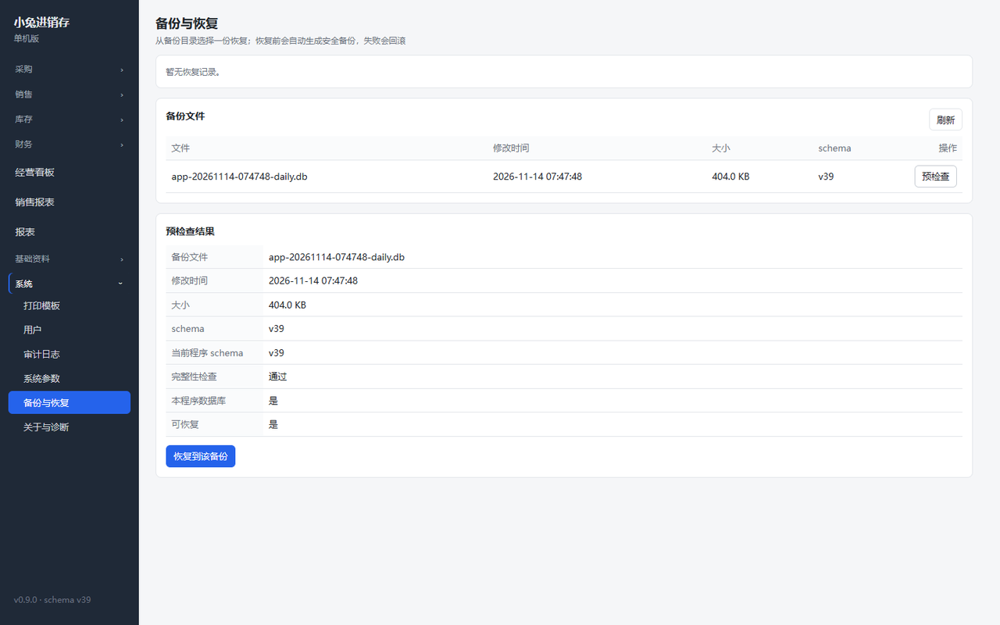
- 点左侧“系统→备份与恢复”。
- 在备份文件列表里选择日期合适的一份。
- 点“预检查”，看备份日期、数据量和是否可恢复。
- 确认无误后点“恢复到该备份”，再按提示确认。
- 恢复前软件会自动再做一份安全备份；恢复完成后重新登录，核对商品和库存。
7.4 手工备份与换电脑
- 先完全退出软件（网络版先停止服务器窗口）。
- 把整个数据目录复制到移动硬盘；不要只复制
app.db一个文件，备份和配置也一起带上。 - 在新电脑上按第 1 章安装同版本软件，安装时把“数据目录”选到和原来一样的路径，或先装好再由维护人员修改配置。
- 把复制的数据目录放回对应位置，打开软件核对数据。
如果只是偶尔手工备份，建议在每天关店后做一次，文件名带上日期，例如“小兔数据-2026-11-14”。
软件更新
这一版不自动下载更新；收到新安装包后覆盖安装即可，数据会保留。
怎么升级
- 先按第 7 章做一次备份，尤其是网络版。
- 退出软件；网络版在服务器窗口按 Ctrl+C 停止服务。
- 双击新版本的安装包，按向导覆盖安装。不要先卸载旧版。
- 重新打开软件，在“关于与诊断”里确认版本号已经变化。
- 网络版重启服务器窗口，客户端刷新浏览器页面即可。
常见问题
先按这里的顺序排查；涉及命令的，请让电脑管理员操作。
双击图标没反应，或窗口一片空白
多数是电脑缺少 WebView2 运行组件。Windows 11 一般自带，部分 Windows 10 没有。请到微软官方地址下载安装：https://go.microsoft.com/fwlink/p/?LinkId=2124703
装完重新双击图标。装不上或不想装，也可以让维护人员用浏览器方式打开：在安装目录运行 xiaotu-server.exe --server --port 8080，再用浏览器访问 http://localhost:8080/。
提示端口被占用，网络版起不来
说明 8080 已经被别的程序或另一个小兔服务占用。先确认没有重复打开服务窗口；仍然不行就换一个端口，例如：.\xiaotu-server.exe --server --port 8081
客户端地址也要改成 http://服务器IP:8081/。如果安装时改过数据目录，命令末尾还要加 --data "你的数据目录"。
局域网里其他电脑打不开
按顺序检查：① 两台电脑是否连同一个路由器/交换机；② 服务器窗口是否还开着；③ 地址是否用了服务器的 IP，而不是 127.0.0.1；④ Windows 防火墙是否放行 8080 端口。管理员可在服务器上以管理员身份运行：netsh advfirewall firewall add rule name="小兔进销存 8080" dir=in action=allow protocol=TCP localport=8080
数据能放在共享盘或网盘吗
不建议。数据库文件不适合多台电脑同时读写，网盘同步时还可能产生冲突文件，导致数据损坏。单机版请放本机磁盘；多台电脑共用请用网络版，数据只放服务器本机。
忘记本机口令 / 管理员口令
不要删数据。按第 2.3 节由管理员重置：退出软件后执行 xiaotu-server.exe --set-password admin，再重新打开。重置只改口令，不影响业务数据。
打印没反应，或内容被裁掉
先在预览里看是否提示“超出纸张”。点“返回调整”，把纸张设为 A4，边距调小；仍不行就点“继续”，但打印后要检查边缘有没有缺字。没有打印机时选“Microsoft Print to PDF”先生成 PDF 检查。
安装时 Windows 提示“已保护你的电脑”
安装包目前没有数字签名，Windows 会按惯例拦截。确认安装包来自可信渠道后，点“更多信息”→“仍要运行”。如果公司有安全软件，请让管理员放行。
软件能同时开两个吗
同一台电脑、同一个数据目录只允许一个实例，重复双击会回到已经打开的窗口。需要多人同时使用，请按第 2.2 节使用网络版，不要复制多份程序分别录数据。
一分钟上手清单
第一次使用按这个顺序做，不容易漏。
- 装好软件：安装包→Next→选数据目录→Install→Finish。
- 建资料：商品→客户→供应商；有期初库存的再做“期初导入”。
- 进货：采购→采购入库→选供应商/仓库→填商品和进价→保存并审核。
- 卖货：销售→销售出库→选客户→填商品和售价→保存并审核。
- 查账：库存看数量，报表看库存余额和毛利。
- 备份：每天自动备份；换电脑前把整个数据目录复制到移动硬盘。
- 出问题：先看第 9 章；涉及口令、端口、防火墙的，交给电脑管理员。
本手册对应小兔进销存 Windows 版 0.9.0（构建 2026111301）。如果界面与手册略有差异，以软件实际显示为准。
返回顶部 ↑